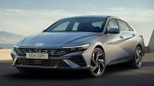

HYUNDAI
A Hyundai é uma montadora de automóveis sul-coreana que foi fundada em 1967 por Chung Ju-Yung. Inicialmente, a empresa focava na produção de carros de baixo custo para o mercado doméstico. No entanto, ao longo dos anos, a Hyundai expandiu suas operações globalmente, tornando-se uma das maiores fabricantes de automóveis do mundo.
A empresa enfrentou desafios no início de sua história, incluindo dificuldades financeiras e problemas de qualidade, mas conseguiu superá-los e crescer significativamente. A Hyundai se destacou por sua abordagem inovadora e pela produção de veículos de qualidade a preços competitivos.
Nos anos mais recentes, a Hyundai tem investido fortemente em tecnologias de veículos elétricos e autônomos, além de expandir sua linha de produtos para incluir SUVs, carros de luxo e veículos comerciais. A empresa continua a ser uma força importante na indústria automotiva global, conhecida por sua qualidade, inovação e compromisso com a sustentabilidade.
Uma curiosidade interessante sobre a Hyundai é que ela possui uma subsidiária chamada Genesis Motors, que foi estabelecida em 2015 como uma marca de veículos de luxo. A Genesis produz carros premium e busca competir com fabricantes de automóveis de luxo tradicionais, como Mercedes-Benz, BMW e Audi.
Além disso, a Hyundai tem se destacado na indústria de veículos elétricos com modelos como o Hyundai Kona Electric e o Hyundai Ioniq Electric, buscando liderar a transição para uma mobilidade mais sustentável.
Outro aspecto notável da Hyundai é o seu forte compromisso com a segurança e a qualidade dos seus veículos. A empresa investe pesadamente em pesquisa e desenvolvimento para garantir que seus carros atendam aos mais altos padrões de segurança e confiabilidade, o que contribui para sua reputação global como uma marca confiável e de qualidade. Além dessas áreas de destaque, a Hyundai também tem se destacado por sua presença global e pela adaptação às demandas locais em diferentes regiões do mundo. A empresa estabeleceu fábricas e centros de pesquisa e desenvolvimento em vários países, o que lhe permite entender as preferências dos consumidores locais e oferecer produtos adaptados a esses mercados específicos.
Por exemplo, a Hyundai tem sido ativa na produção de veículos compactos e econômicos para mercados emergentes, enquanto também oferece modelos de luxo e tecnologicamente avançados para consumidores em países desenvolvidos. Essa flexibilidade e capacidade de adaptação contribuem para a ampla aceitação e sucesso da Hyundai em todo o mundo.
A Hyundai tem se destacado no desenvolvimento de tecnologias de segurança avançadas para seus veículos. Isso inclui sistemas como assistência de frenagem autônoma de emergência, alerta de colisão frontal, detecção de pedestres, monitoramento de pontos cegos e controle de cruzeiro adaptativo, entre outros.
Além disso, a Hyundai tem investido significativamente em pesquisa e desenvolvimento de tecnologias de propulsão elétrica, visando reduzir as emissões de carbono e promover a mobilidade sustentável. Modelos como o Hyundai Kona Electric e o Hyundai Ioniq Electric são exemplos disso, oferecendo desempenho e autonomia adequados para atender às necessidades dos consumidores preocupados com o meio ambiente.

Um exemplo notável é a filosofia de design "Sensuous Sportiness" adotada pela Hyundai, que busca incorporar elementos de sensualidade e esportividade em seus veículos. Isso se reflete em linhas fluídas, proporções dinâmicas e detalhes sofisticados, que conferem aos carros da Hyundai uma aparência distinta e elegante.
Além disso, a Hyundai tem explorado novas formas de interação entre os ocupantes e o veículo, por meio de tecnologias como sistemas de infotainment avançados, interfaces intuitivas e conectividade aprimorada. Isso cria uma experiência de condução mais envolvente e conectada para os motoristas e passageiros.